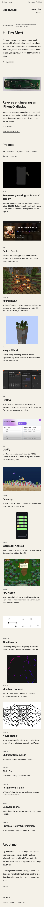

First design, revised
This revision keeps the original columns, section order, and project grid. It changes the font, replaces the slogan headings, and removes the decorative rules, color accents, and tinted image backgrounds.


Demo
The video starts with a screenshot of the previous draft, then shows the revised page, project filters, a full writeup, and the phone layout.
Mobile screenshot
